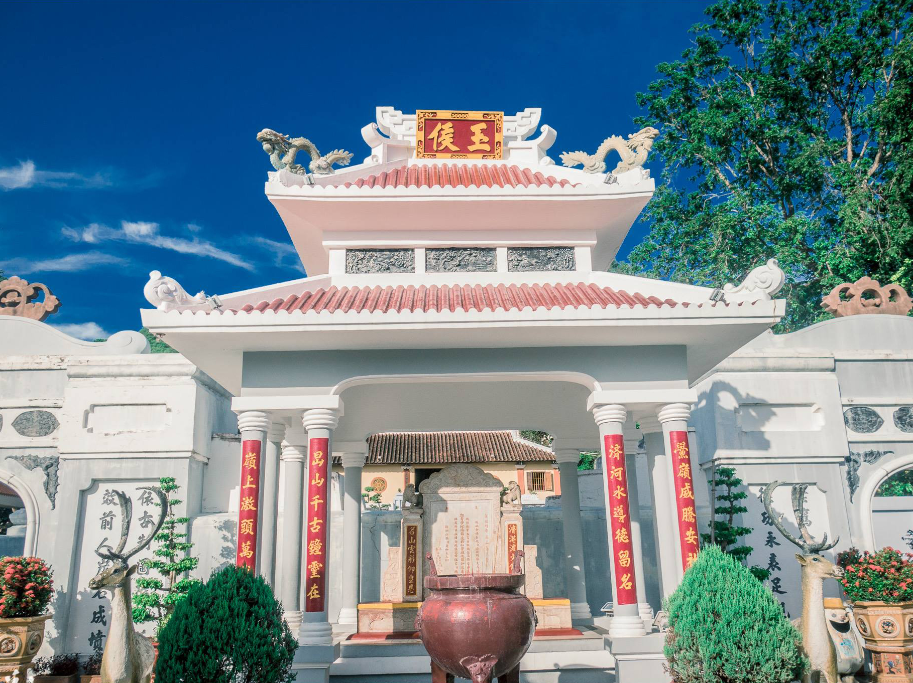
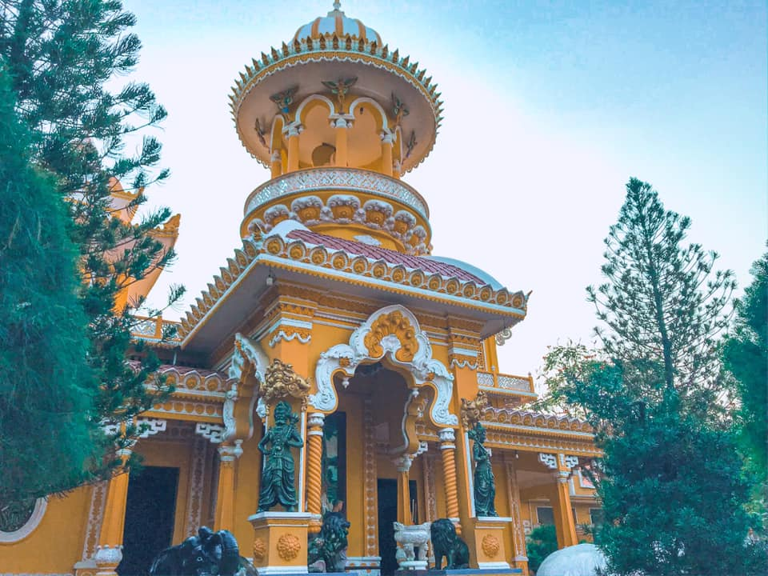

An Giang is one of three provinces located in the Long Xuyen quadrangle, in the southwest of the Mekong Delta and located on both banks of the Hau River. While the north of An Giang is the Vietnam - Cambodia border, the remaining three sides of this land border Dong Thap, Kien Giang, and Can Tho. An Giang's special geographical location has brought about a unique blend of culture, religion, architecture, and cuisine of the Kinh, Khmer, Cham, and Chinese people. Besides, An Giang also attracts tourists by rows of palm trees soaring high into the blue sky next to vast lush rice fields, along with many scenic spots, historical relics, and many impressive check-in points. Follow me to the Bay Nui region - An Giang to hear mysterious spiritual stories and famous delicious fish sauce hotpot.
1. Chau Doc city
Chau Doc city belongs to An Giang province, located on the banks of Hau River, about 210 km east of Ho Chi Minh City, about 110 km from Can Tho city and about 50 km south of Long Xuyen city. Chau Doc is a border city, 150 km west of the capital Phnom Penh (Cambodia).
Ba Chua Xu Temple on Sam Mountain

With a history dating back to 1824, Ba Chua Xu Temple is a spiritual place not to be missed when coming to An Giang. The sacred temple is located at the foot of Sam Mountain, attracting visitors from all over the world to visit and pay their respects. The Ba Chua Xu Festival of Sam Mountain takes place solemnly from 23 to 27 of the 4th lunar month every year, attracting millions of Buddhists and tourists from all over.
Thoai Ngoc Hau mausoleum
Located opposite the left and right directions (left, right) of Ba Temple, there are also the presence of two other architectural works: Thoai Ngoc Hau mausoleum (Son mausoleum) and Tay An ancient temple relic (Tay An pagoda). These two works, along with Ba Chua Xu Temple, create a set of three most attractive attractions in Chau Doc city right at the foot of Sam Mountain. Therefore, when you have the opportunity to travel to the West, visit An Giang, you should fully visit these three destinations.
Tay An Pagoda
The pagoda is ranked as a national architectural and artistic relic and has established a Vietnamese record as the first pagoda with architecture combining Indian artistic style and ancient national architecture in Vietnam. Tay An Pagoda is located on a high, spacious foundation, leaning against the solid Sam Mountain behind. It is a highly aesthetic architectural work, surrounded by many ornamental trees and flowers creating a harmonious landscape.
The fish farming raft village
The fish farming raft village at the confluence of Chau Doc River, right in the city center, is implemented by the Trade and Investment Promotion Center of An Giang Province to create a highlight for typical tourism products of the River Delta region. Raising freshwater fish in cages is a traditional profession, a characteristic of people around the Mekong River basin.
161 rafts stretching over 1 km are covered in colors in the order of red, yellow, orange, green, blue, purple. The location of the rafting village is on the tour route to learn and experience the river life and culture of the An Giang Cham community. Visitors can visit the raft village by boat and experience life on the raft houses.
Hang Pagoda(Phuoc Dien Pagoda)

Hang Pagoda is the folk name of Phuoc Dien Tu, one of four historical and cultural relics of Sam Mountain. With its pure, poetic beauty but also a bit of contemplation, the cave pagoda will be an extremely interesting destination for tourists who love beauty.

Hang Pagoda(Phuoc Dien Pagoda)
Located on the slopes of Sam Mountain, Hang Pagoda gives visitors an extremely wonderful feeling. A very charming but equally sacred space. This over one hundred year old pagoda has extremely clear views and a quiet, respectful space. Hang Pagoda is surrounded by deep green forests of majestic mountains. Many types of trees bloom in season to color the entire area, bringing a poetic picture to the ancient Hang Pagoda.
2. Tinh Bien Town
Located about 10km from the common border of Cambodia, and about 25km from Chau Doc City. Tinh Bien district is considered one of two mountainous districts of An Giang province with potential for border economic development and cultural and tourism exchange. In Tinh Bien, Khmer people live in large numbers, so this place also preserves the ancient cultural values of this people. According to Tinh Bien An Giang travel experience, the best time to visit this place is November to December. At this time the weather is not too hot, the sun is not harsh and it rarely rains so it is extremely suitable for you to start your trip to Tinh Bien, An Giang.
Tra Su Melaleuca Forest
Tra Su Melaleuca Forest is located in Tinh Bien district. When entering, visitors will be overwhelmed by the majesty, a green color filling the eyes that is the green of water hyacinth, of the forest shading both the road and the water surface.
If you want to visit Tra Su Melaleuca forest, visitors must go by small boats, gliding on the green water hyacinth carpet to sneak onto the romantic green paths. At Tra Su Melaleuca forest, there is an observation tower. From the watchtower, visitors will see the entire panorama of the immense Melaleuca forest.
The longest bamboo bridge through the forest in Vietnam, with the total length of over 10km
Tra Su Melaleuca Forest is a great place for tourists who love nature and wildlife such as birds, storks, egrets... At different times, you will see different beautiful moments of these species. animals in the forest. Visitors will see storks nesting in trees, flying in the sky, and looking for food on the water or bushes.

Tra Su Melaleuca Forest has an extremely diverse fauna including: 70 bird species, 22 reptile species, 11 mammal species, 23 aquatic species and 140 plant species belonging to 52 families and 102 genera... Of which 2 species have names in the "Vietnam's Red Data Book" are the Indian stork (Giang Sen) and the snake-necked stork (Dieng Dieng).
Lam Vien Cam Mountain tourist area
Cam Mountain possesses a majestic, wild landscape. According to people, this is a high mountain area with difficult terrain to navigate and luxuriant trees, so there are many hidden dangers. Cam Mountain is famous for the appearance of a series of pagodas amidst the vast space of mountains and forests.
Van Linh Pagoda
If you come here, please visit Van Linh Pagoda, which is considered a favorite destination of many Southern people. Initially, the pagoda was called Leaf Pagoda by the people because of the simplicity of the thatched roofs and mud walls built in 1927. Thanks to the respect from the people, the pagoda became more and more spacious and convenient becoming a famous sacred destination when traveling to Tinh Bien, An Giang.
Cam Mountain landscape
Phat Lon Pagoda Zen Monastery was built in 1912 on a large piece of land on the side of a mountain. Phat Lon Pagoda was built in a traditional architectural style with clearly divided areas such as the main front, the rest house and the bell house. To make it easier for people from all over to come to worship, the temple placed the Buddha statue outside the premises.
Every year, thousands of tourists come here to admire and pray
This famous destination has a giant Maitreya Buddha statue placed in the temple grounds. In 2013, the work was recognized by the Asia Book of Records and the Vietnam Record Book Center as the largest Maitreya Buddha statue on the mountain top in Asia.
The Maitreya Buddha statue is shaped with its back leaning against the mountain, facing the clear blue Thuy Liem lake. When viewed from a distance, the white Buddha statue is bright in the middle of the green forest space, creating a quiet and pure beauty.
3. Tri Ton Town
It can be said that the picture of the countryside with vast green fields and peaceful, fresh space can be a common specialty of the Western provinces. But if you are looking for a place where diverse cultures and beautiful scenery meet, then you should try traveling to Tri Ton once. This is a district on the border with Cambodia located in the west of An Giang province. About 50km from Chau Doc city and about 20km from Tinh Bien town.
The special thing about this countryside is the diverse combination of people's characteristics among ethnic minorities, mountainous areas and religions. Not only that, in addition to the green rice fields, Tri Ton is also a district that possesses the majestic beauty of majestic mountains and hills associated with mysterious colors.
Western tourism in general and Tri Ton - An Giang tourism in particular all have one thing in common: bringing a peaceful, rustic beauty all year round. So you can come here any time of the year
- You can arrange time to participate in the unique festivals of Tri Ton An Giang such as: In April is the Chol Chnam Thmay Festival, on the full moon day of the fourth lunar month is the Pisat Bo Chia Festival,...
- Western flood season starts from July to October of the lunar calendar: Everywhere are vast white water fields, this is an opportunity for you to enjoy irresistibly delicious dishes of the western flood season.
- September is the golden rice season in Ta Pa fields, a large area is covered with yellow like an endless, extremely poetic carpet.
Ta Pa Pagoda and Ta Pa Lake
Ta Pa is a hill in Tri Ton town, located in the mysterious That Son region. Not only famous for its beautiful landscape, Ta Pa also attracts tourists by the antiquity and majesty of Ta Pa pagoda on the mountain. Ta Pa Pagoda is also known as Mountain Pagoda, or Chun-Num Pagoda. The Khmer pagoda possesses a unique location, hidden behind rice fields with extremely outstanding architecture amidst the pristine mountains and forests.
Ta Pa Lake
On the way to Ta Pa Pagoda you will pass Ta Pa Lake. Both sides of the lake are surrounded by high rocks, the water is clear to the bottom, creating a enchanting beauty. Ta Pa Lake is an artificial lake formed during the stone mining process. The water in the lake is rainwater and flows from underground rocks. However, the beauty of Ta Pa Lake is not inferior to any natural freshwater lake. The clear blue water, sparkling lake bottom reflecting limestone, and the majestic surrounding natural scenery create an extremely poetic and charming setting.
O Thum Lake

Not only famous for its majestic natural scenery, An Giang also touches the hearts of tourists with places such as Ta Pa lake, O Thum lake, O Ta Soc,... Clear blue lake surface with towering mountains and forests. O Thum Lake appears as an An Giang young woman with all its inherent natural beauty, so this is always a place to attract tourists, especially young people, with excellent views that create memorable moments.
O Thum Lake
Some beautiful pictures of Tri Ton Town
Koh Kas Pagoda(Heaven's Gate)
Tri Ton field in flood season

Ta Pa field
Soai So Lake
Ta Pa field
Heart Palm Tree